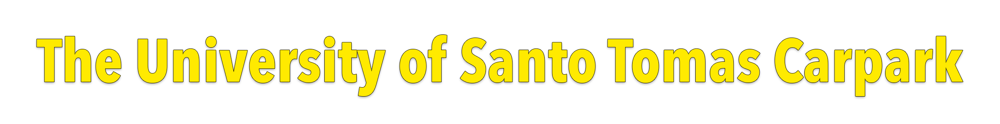
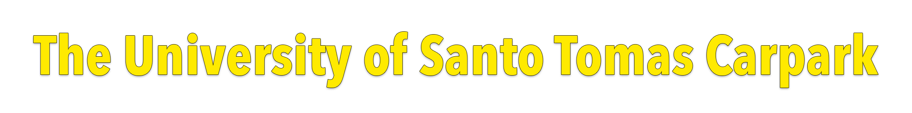

A stressed college student is always hungry. The UST Carpark is a place where Thomasians eat to satisfy their hunger. It is a building that houses different kinds of restaurants and fast food. It is also shares space with the College of Accountancy. There are a variety of restaurants to choose from. A lot of them offer a student price budget. Since the building is shared by the Accountancy students, it doesn't have much space for a lot of customers to occupy per restaurant; though there are still many more to choose from and many other places to stay and eat. However, there is this problem that many students encounter, Because of different circumstances, students consider many things that will affect their decision in choosing where to eat. In that case, this website will help the students on that.